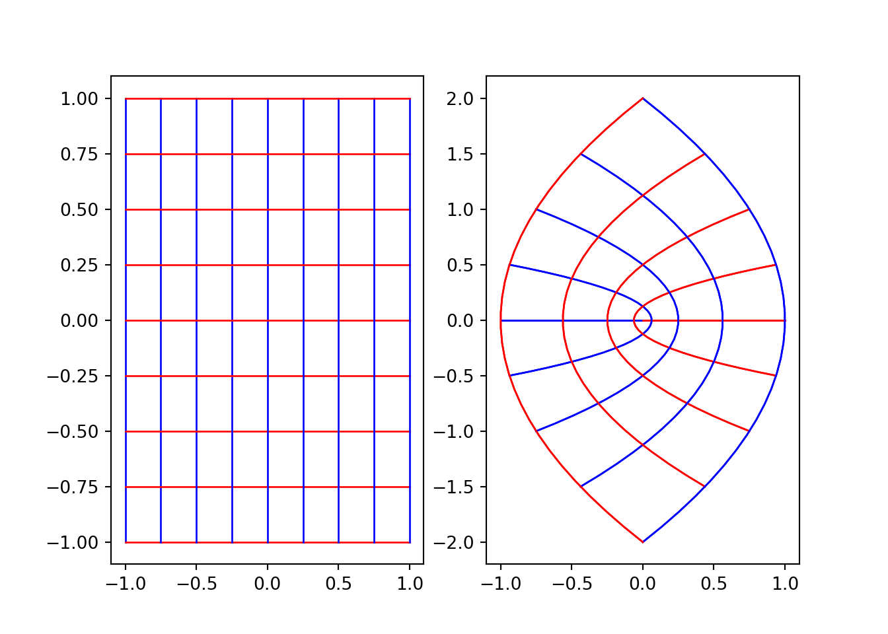
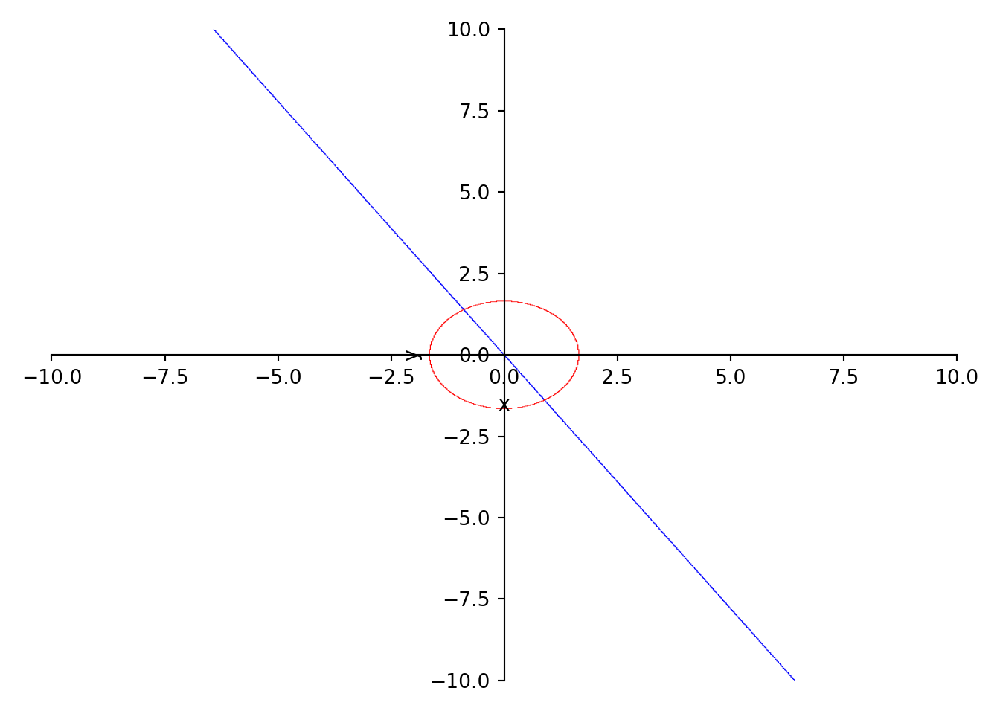
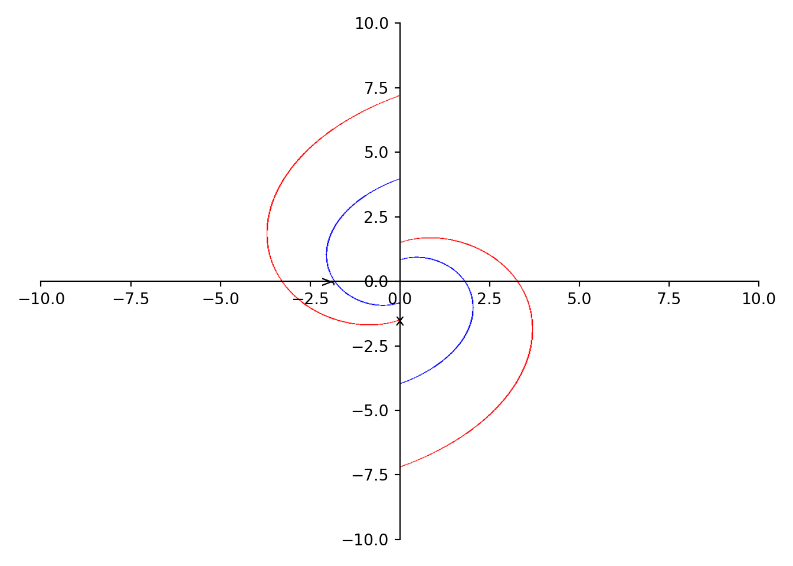
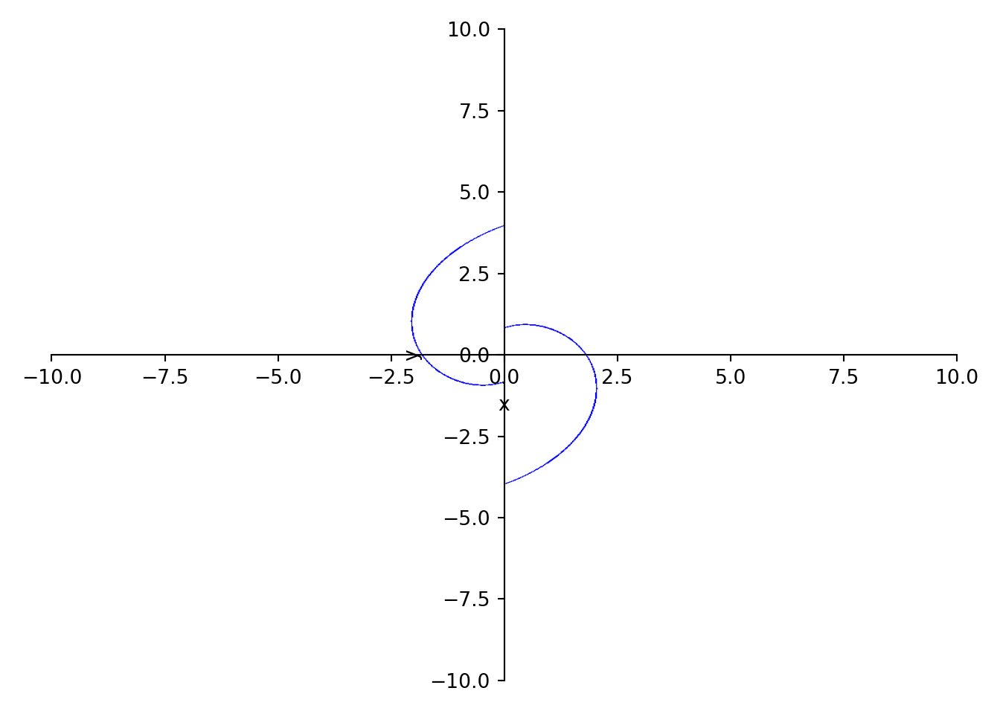
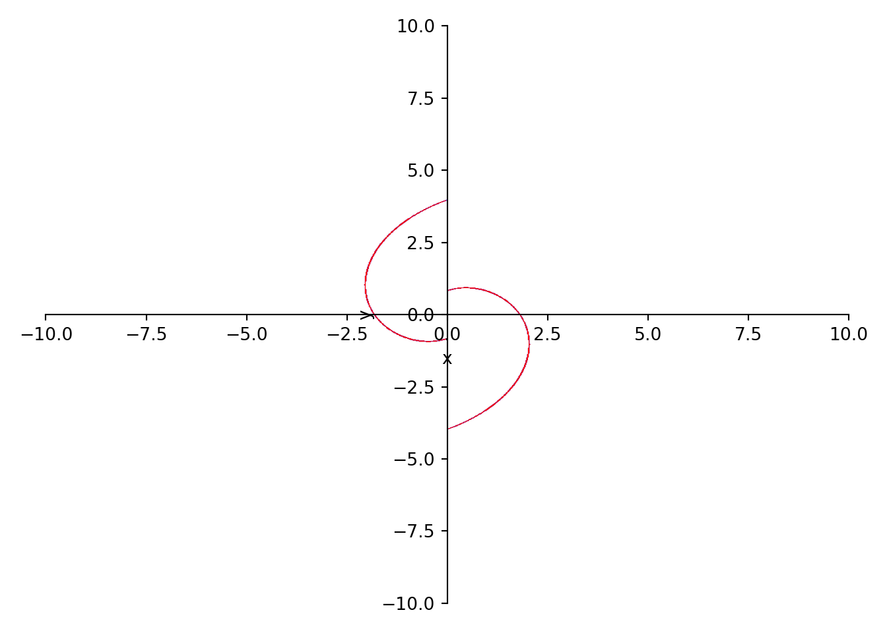
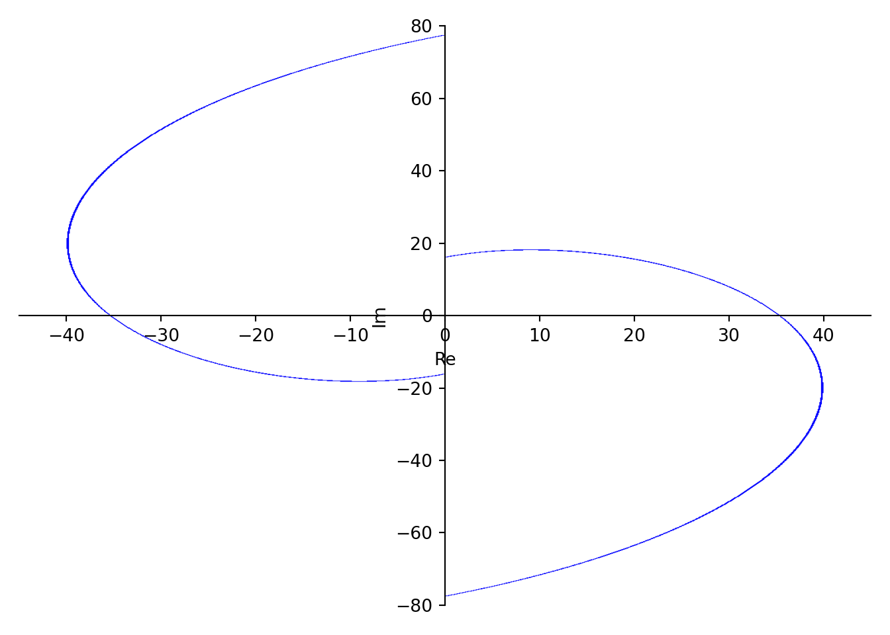
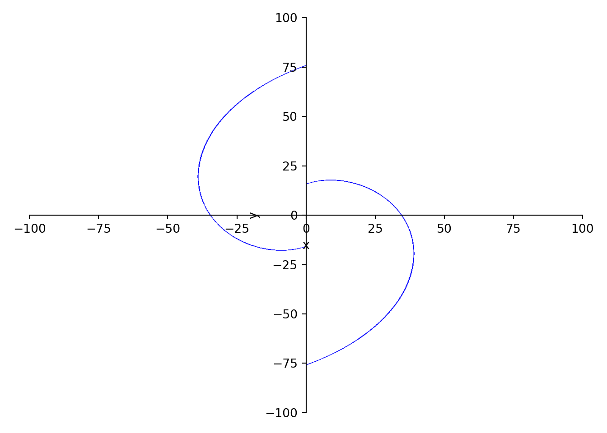

Chapter 6 Codes
6.1 Python Code
import matplotlib.pyplot as plt
import numpy as np
def func(z):
return z**2
def plot_conformal_map(f, xmin, xmax, ymin, ymax, nb_grid, nb_points):
xv, yv = np.meshgrid(np.linspace(xmin, xmax, nb_grid), np.linspace(ymin, ymax, nb_points))
xv = np.transpose(xv)
yv = np.transpose(yv)
zv = func(xv + 1j*yv)
uv = np.real(zv)
vv = np.imag(zv)
xh, yh = np.meshgrid(np.linspace(xmin, xmax, nb_points), np.linspace(ymin, ymax, nb_grid))
zh = func(xh + 1j*yh)
uh = np.real(zh)
vh = np.imag(zh)
ax = plt.subplot(121)
for i in range(len(yv)):
ax.plot(xv[i], yv[i], 'b-', lw=1)
ax.plot(xh[i], yh[i], 'r-', lw=1)
ax2 = plt.subplot(122)
for i in range(len(vv)):
ax2.plot(uv[i], vv[i], 'b-', lw=1)
ax2.plot(uh[i], vh[i], 'r-', lw=1)
plt.show()
nb_grid = 9
nb_points = 30
xmin, xmax, ymin, ymax = -1, 1, -1, 1
plot_conformal_map(func, xmin, xmax, ymin, ymax, nb_grid, nb_points)
6.2 Helical Domain
from sympy import *
x, y = symbols('x y')
# If Theta=pi and c=2
theta=pi
c=1
p=plot_implicit(log(x**2 + y**2)*sin(theta) + atan(y/x)*cos(theta) -c,
(x, -10, 10), (y, -10, 10), show=False)
# If Theta=pi/2 and c=1
theta=pi/2
c=1
p1=plot_implicit(log(x**2 + y**2)*sin(theta) + atan(y/x)*cos(theta) -c,(x, -10, 10), (y, -10, 10), show=False,line_color='r')
p.extend(p1)
p.show()
from sympy import *
x, y = symbols('x y')
# If Theta=pi and c=2
theta=1
c=1
p=plot_implicit(log(x**2 + y**2)*sin(theta) + atan(y/x)*cos(theta) -c,
(x, -10, 10), (y, -10, 10), show=False)
# If Theta=pi/2 and c=2
theta=1
c=2
p1=plot_implicit(log(x**2 + y**2)*sin(theta) + atan(y/x)*cos(theta) -c,(x, -10, 10), (y, -10, 10), show=False,line_color='r')
p.extend(p1)
p.show()
from sympy import *
x, y = symbols('x y')
# If Theta=pi and c=1
theta=1
c=1
p=plot_implicit(log(x**2 + y**2)*cos(theta) + atan(y/x)*sin(theta) -c,(x, -10, 10), (y, -10, 10))
p1=plot_implicit(log(x**2 + y**2)*sin(theta) + atan(y/x)*cos(theta) -c,(x, -10, 10), (y, -10, 10), show=False,line_color='r')
p.extend(p1)
p.show()
from sympy import *
x, y = symbols('x y')
# If Theta=pi and c=1
theta=3
c=1
p=plot_implicit(log(x**2 + y**2)*cos(theta) + atan(y/x)*sin(theta) -c,(x, -100, 100), (y, -100, 100))
